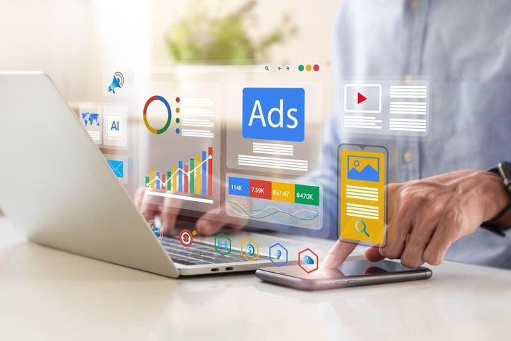
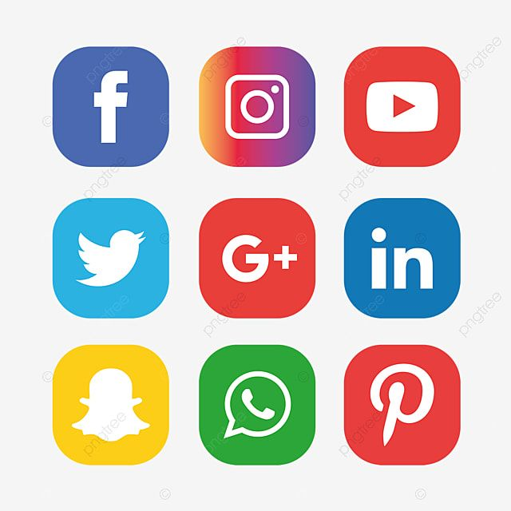
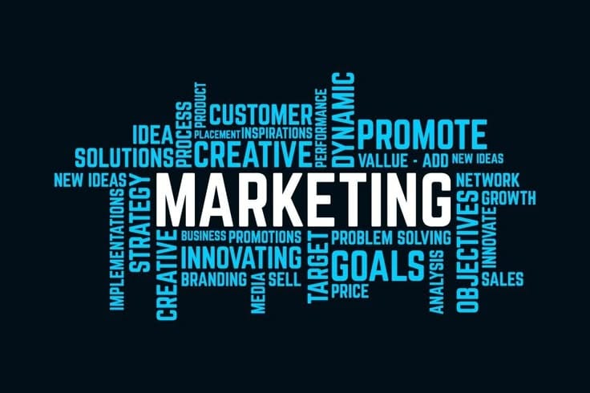
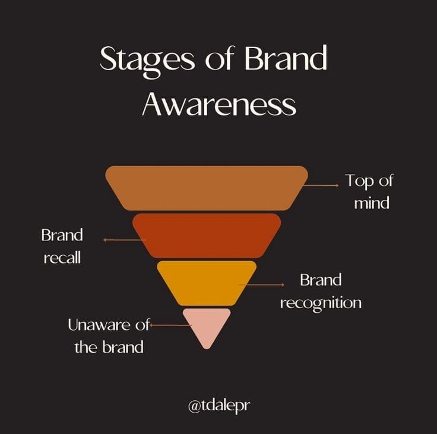

Meet Priyanka
I’m Priyanka – a creative strategist passionate about building brands that don’t just exist online but truly connect and convert.
With a strong foundation in social media management, content planning, and branding, I blend creativity with data to craft stories that resonate. From trend-savvy content creation to deep-dive research, I ensure every piece of content has a purpose — and every strategy delivers impact.
I also bring hands-on experience in paid ad campaigns, having successfully managed and optimized campaigns to drive impressive ROI across platforms. Whether it's boosting brand awareness or fueling conversions, I know how to make every rupee count.
MY WORK
From crafting compelling brand stories to designing scroll-stopping visuals, I bring strategy and creativity together to help brands grow online. Here’s a look at some of my recent social media work that drove engagement, reach, and results.
CORE EXPERTISE

Performance Marketing
Social Media
Market Analysis/ReasearchBrand Awareness
Brand AwarenessMY WORK
From crafting compelling brand stories to designing scroll-stopping visuals, I bring strategy and creativity together to help brands grow online. Here’s a look at some of my recent social media work that drove engagement, reach, and results.
SKILLS & TOOLS
PROFESSIONAL EXPERIENCE
OWN MY HOME
TEAM LEAD | May 2018 – 2021
- Leadership Etiquettes: Nurtured a culture of accountability and excellence by strategic task delegation, progress monitoring, and team motivation, driving consistent achievement of ambitious goals and exceptional results
- Digital Marketing Strategist: Developed a paid acquisition strategy across Google, Facebook, and industry newsletters, generating high-quality leads that translated to ₹15 Lakhs in revenue within a 1-year campaign management period yielding a consistent flow of 2,000 leads
- Marketing Roadmap: Adept in developing & implementing short/long-term marketing strategies including annual marketing plans, defining the media mix across social media, digital promotion & optimal utilization of media vehicles to boost organic reach by 50%.
- Marketing Campaign: Designed a holistic Women's Day “THANKHER” campaign centered on villa ownership, orchestrating all aspects from ideation to execution, utilizing YouTube Ads to amplify project interest, showcasing an extraordinary Creativity and increased visibility.
- Content Mastery: A passionate storytelling, and proactively shape & pitch compelling strategically relevant creative content ideas to update content in local digital channels & increase social media engagement.
- ROI Accountability: Responsible for ideating & executing an incremental ROI strategy to ensure the marketing department maintains, improves & increases the ROI by 5x more.
DHAMMANAGI ZEUS FREELANCE
Jan 2024- May,2024
- Social Media Marketing: Ability to leverage digital and social media platforms to drive brand visibility, engage with the target audience increasing the Branding awareness.
- Content Specialist: Crafted innovative content initiatives tailored to (first-time homebuyers, luxury property investors) within the housing industry, leveraging diverse formats such as blog posts and virtual tours to captivate audiences
KOIOS STUDIO AND ENGINEERING
Nov 2024 - Present ( Remote)
SOCIAL MEDIA MANAGER
- Content Planning & Distribution
- Content Calendars & Strategic Posting
- Created and executed monthly content calendars aligned with client goals, seasonal campaigns, and industry trends.
- Ensured a balanced mix of educational, promotional, and engagement-driven content.
- High-Quality, Platform-Optimized Content
- Produced and published platform-specific posts (Instagram carousels, LinkedIn thought-leadership, reels, etc.) to maximize visibility and interaction.
- Used platform analytics to determine best posting times and content formats.
- Cross-Platform SEO & Distribution
- Supported off-page SEO efforts by distributing content across relevant social groups, online communities, and digital PR channels.
- Ensured backlinks and mentions in niche domains to improve domain authority and content discoverability.
- Content Ideation for Instagram & LinkedIn
- Generated fresh and relevant content ideas tailored for Instagram’s visual storytelling and LinkedIn’s professional narrative.
- Developed concepts for reels, stories, polls, infographics, and carousels to boost platform engagement.
- Influencer Marketing
- Nano Influencer Campaign Execution
- Initiated and managed nano influencer campaigns by identifying niche-relevant influencers, conducting outreach, negotiating deliverables, and executing collaborations. Monitored campaign impact and ensured alignment with brand objectives.
- Consistent Engagement
- Maintained a consistent posting schedule across Instagram, LinkedIn, and YouTube to strengthen brand presence and community engagement. Ensured platform-specific content strategies to cater to each audience type.
- On Instagram: Engaged with followers through story interactions, polls, comment replies, and DMs. Leveraged Reels, Carousels, and Highlights to drive interaction and retention.
- On LinkedIn: Shared thought leadership posts, industry updates, behind-the-scenes content, and client success stories. Actively participated in discussions, commented on relevant industry posts, and built meaningful B2B connection
- Client Management & Coordination
- Acted as the primary point of contact between internal teams and clients, ensuring smooth communication, clear expectation-setting, and timely delivery of project milestones.
- Managed end-to-end client relationships—from onboarding and strategy alignment to reporting and feedback collection—ensuring a seamless and professional experience throughout the engagement cycle.
- Conducted regular client meetings and review sessions to discuss performance metrics, project progress, campaign outcomes, and next steps. Translated client needs into actionable deliverables for creative and technical teams.
- Coordinated cross-functional teams including content creators, designers, developers, and ad specialists to ensure that client deliverables were aligned with brand objectives and timelines.
- Proactively identified client pain points or opportunities, recommended tailored solutions, and ensured follow-through to maintain satisfaction and long-term collaboration.
- Ensured project documentation, timelines, and communication logs were maintained accurately for transparency and accountability.
- Handled multiple clients simultaneously, prioritizing tasks and managing expectations effectively without compromising on quality or deadlines.
EDUCATION & CERTIFICATIONS
- Master In Business Administration (MBA), Jain University (Online), 2022–2024
- Bachelor Of Commerce (B.Com), Christ University, 2011
- Digital Marketing, Streamline Academy, 2019
HIGHLIGHTS & STRENGTHS
- Strategic Planner with Vision: Developing steps to achieve "Big Picture" results.
- Creative & Data-Driven Thinker: Blending innovation with analytical insights.
- Collaborator & Avid Communicator: Fostering strong team and client relationships.
- Strong Stakeholder Engagement: Building and maintaining effective relationships.
- Problem Solver: Adept at identifying and resolving complex challenges.
- Performance-Oriented & Results-Driven: Consistently achieving and exceeding targets.
- Digital-First Mindset: Leveraging technology for maximum impact.
- Resilient: Thriving in dynamic environments and overcoming challenges.
- Adaptability & Continuous Learning: Committed to staying current with industry trends and technologies.
GET IN TOUCH
I'm always open to new opportunities and collaborations. Feel free to reach out!
- pri.dhruvravi@gmail.com
- +91 9980080747
- Bengaluru, Karnataka, India
- www.linkedin.com/in/priyankakp